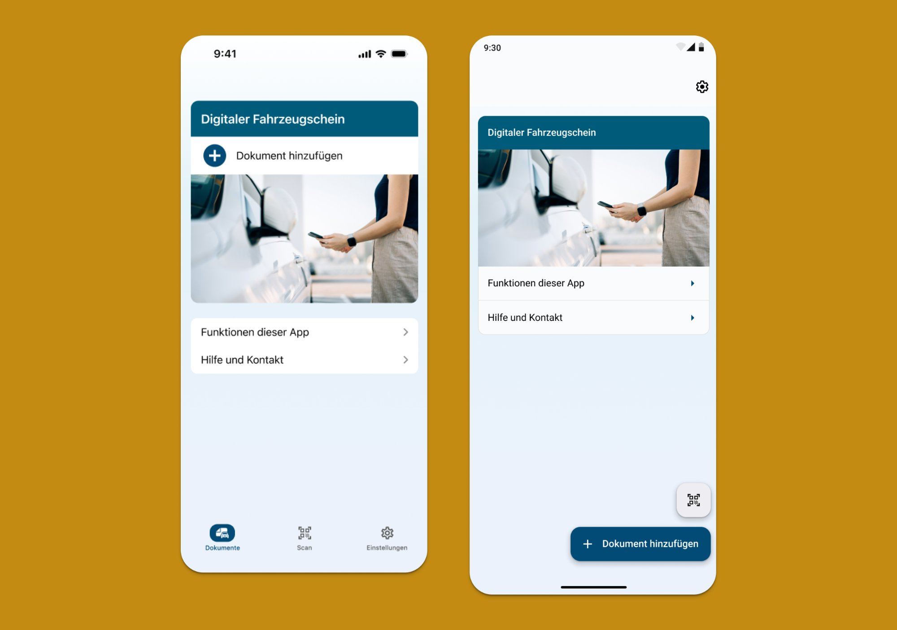
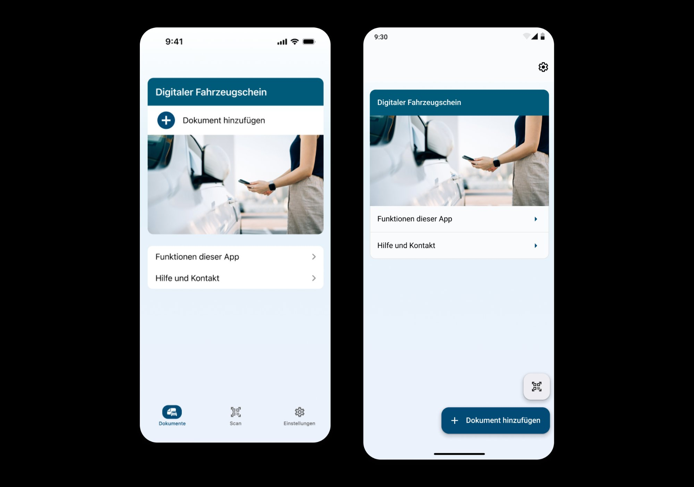

01
i-Kfz — Digital Driver's Licence & Vehicle Registration App




Germany's first BITV-certified government app for digital driver's licences and vehicle registration — native Android and iOS, supporting sensitive authentication processes and accessible to all citizens. I led UX/UI design end-to-end, built and scaled the team, and owned the design system.
02
EU Digital Identity — UX Research & Trust Framework

Research-led design for the EU's rollout of digital identity apps across member states. The challenge: making systems that feel secure and trustworthy to citizens — especially older adults and those unfamiliar with digital services. I developed a user research framework combining usability testing, co-creation, and system storytelling.
03
Ryse — Health App with IoT-Connected Mood Interactions


End-to-end UX design for a B2C health app connecting with a biometric IoT device to influence users' moods. The design challenge was translating invisible, complex technology into an experience that felt intuitive and emotionally resonant for non-technical users across Android and iOS.
04
Seeing the Algorithm — AI Literacy Research Project


A participatory design and research project helping children gain AI literacy through drawing. Part of my MA in Design for Responsible AI — a school-based programme where young people visualise the algorithms shaping their digital lives, with a long-term archive of generational insight as the goal.
05
EU Commission UX Workshops — Cross-Border Digital Services

Led Miro-based and in-person UX workshops with the EU Commission, representing the German Government. Aligning different nations' design standards, regulations, and user needs to build a shared framework for cross-border digital public services.